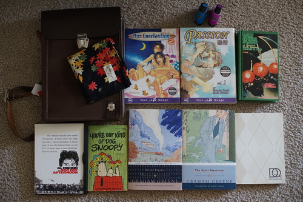
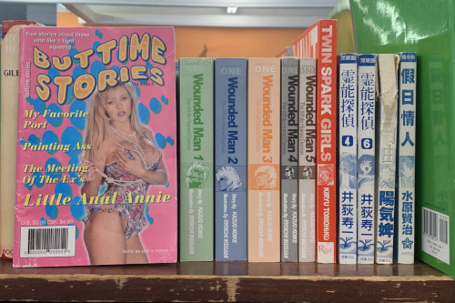
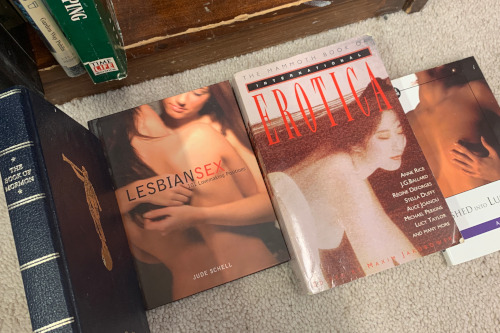

Ryan decided to junk the computer our neighbor gave us when he moved, so I ended up with 8 more gb of ram because Ryan doesn't have a DDR4 slot! What do I even need 24 gb for?!?
okay okay i get it. i need to go to hobby lobby and pick out a new hobby because I have nothing better to do than take a walk to the thrift store. i haven't learned to enjoy pointless wandering walks yet but i suppose that would be a good alternative.
I think that's the right word?
more contraband. the cover is already off to a bad start!
cant wait to see what kind of h*cked up cr*p happens in volume 2!!!
My mom asked me to find her an antique botany book a few months back for the purpose of "junk journaling". It's from the 70s, but I can't say I want to give this to her knowing her plan is to destroy it for something as uncreative as junk journaling.
Process Blue and Purple. Are these pens going to show up?? maybe I should look into getting a set of empty alcohol marker bodies
For Ryan
woodstock so cute
For Ryan
For Ryan
this bag looks really cool and not really used. it's still tough other than the strap. it even has a little handle across the 2 strap hooks. Here's the inside inscription in case a translation shows up in my inbox! I think it's an officer's map case from my short googling, but I immediately saw it as an art bag.
now i need to gather the courage to try drawing where people can see me... or alternatively i can carry a map in it so i wont get lost on my walks!
i was able to find more manga because they had made it on the shelves instead of having to dig through a plastic tub for them 10 minutes before closing. I also found volumes 1-5 of Wounded Man but opened to a few random pages and put it back on the shelf after seeing way more than I wanted. There were more manga I chose not to buy after looking through a few pages and getting grossed out. Twin Spark Girls looked to have a gyaru in it but even that couldn't save it. i hope this "buttime stories" magazine is fake but i wasn't brave enough to open it.
oh my j*sus the thrift store is FILLED with this stuff! it's all over!!! i'm not sure im allowed to talk because i did just buy all the yaoi but we should probably not keep these where kids can grab them. like probably not in a thrift store at all! there's like a shelf worth of erotica, but luckily that was all just text.
I'll start with my disclaimer being that I've never been into full on yaoi and shounen ai is my limit of enjoyment.
Let's start with Alone in my King's Harem by Lily Hoshino! Save the best for first right? This one is a collection of 5 (technically 6) short stories. Hoshino has gorgeous art as usual and all the uke are basically long haired flat chested girls.
Most of the stories are unrealistic but cute little love tales. They're a little strange but it's yaoi so I have little expectations. There isn't any full on boy f-cking until the final chapter (technically 2) and it's with horny high school boys. My least favorite. ugh
My copy is water damaged which sucks. Honestly I'm not sure it's water. It's really gross and my favorite book of the 3 even.
Passion Volume 1 was uh... So this high school boy forces himself on his (somewhat willing) male teacher. Actually it definitely counts as rape. This is also on the FIRST page so we are not off to a good start. His teacher makes a deal to "play date" him as long as he keeps up his grades.
Now, there's another teacher at the high school who also wants to f-ck raped sensei. They were previously lovers! Student starts getting jealous. Other teacher then sexually assaults (but does not rape) raped teacher in a restroom in public. Raped teacher's penis is censored by being completely removed. There are 2 sex scenes.
It was very strange and I'm not a fan of the very yaoi art. My love for teenage boys has disappeared with my teens. I have volume 2 now so prepare for my review of that in blog post 107!
The last, and worst, was Dance till Tomorrow Volume 3. I did not realize it was volume 3 when I bought it oops. This one was NOT yaoi and for some reason I bought it anyway. I guess I didn't expect the whole thing to be sex. It was awful. First off, it's reversed. It was printed in 2002 so I guess we weren't past mirroring art for americans yet.
There is a sex scene in the first chapter. A 1.5 foot long dong uncensored and a NTR fantasy (including said dong) are in the second chapter. In chapter 3, they get cockblocked twice. The 4th chapter starts with an extremely suggestive drawing that does not appear at first glance to be a girl drinking a bottle of soda. Chapter 5 has a sex scene. The sixth chapter contains only titties, so I will deem that safe. Chapters 7, 8, and 9 are safe as well. Chapter 10 makes up for lost time by having the main characters have sex twice. Chapter 11 they have sex in front of a window while someone watches from a distance. Girl brings over porn to watch with boy in chapter 12. They don't have sex but you get a good view of the show. In the final chapter, the worst thing that happens is giant dong man starts kissing a naked prostitute and some over shirt titty grabbing.
It was awful. There is some sort of a plot but it's uninteresting and second to the sex. Why did I buy this??? It's garbage.
For some reason, I feel like this hetero hentai I've run into these past few days are 200x more horny than the yaoi. There's been even less story and more f*ck scenes. I could open to a random page of the hetero ones and view a woman getting scr*wed. I cant even collect these things ironically.